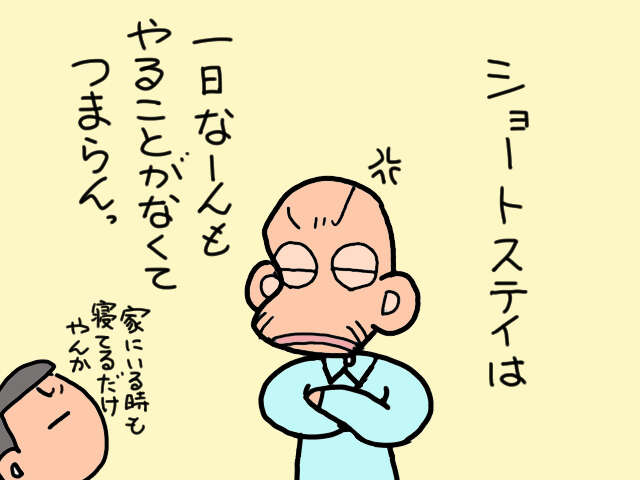
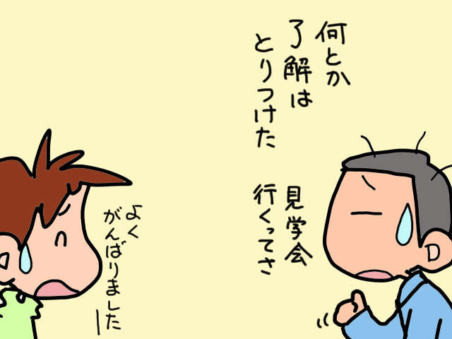
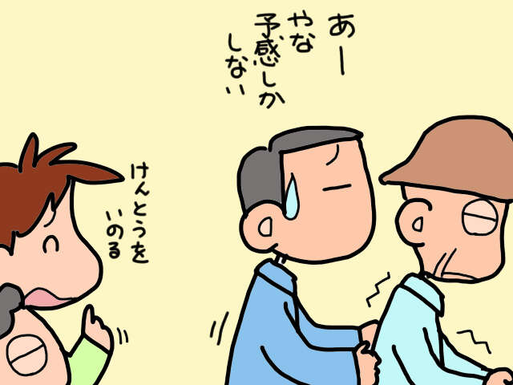
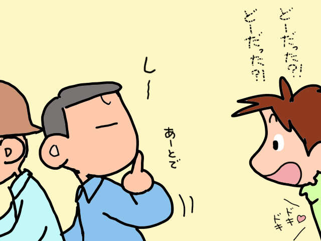
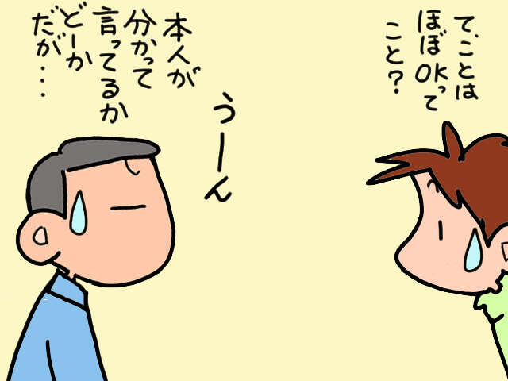
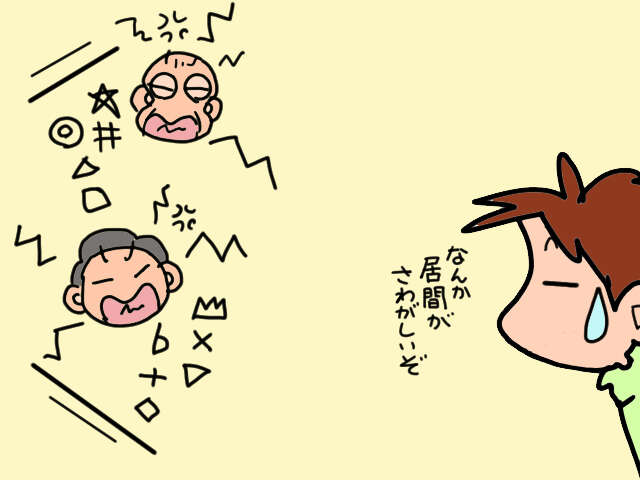
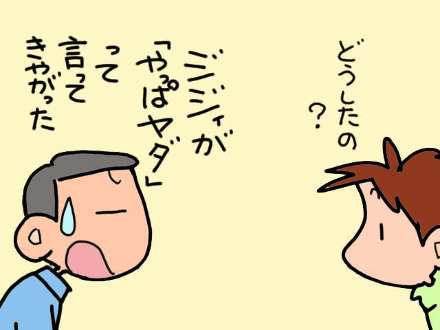
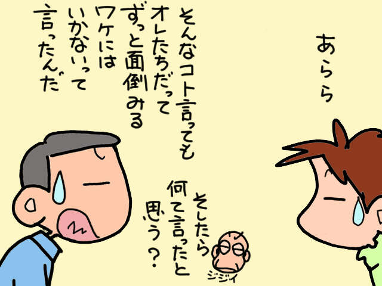
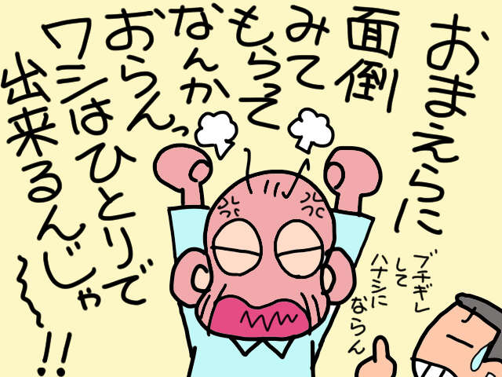
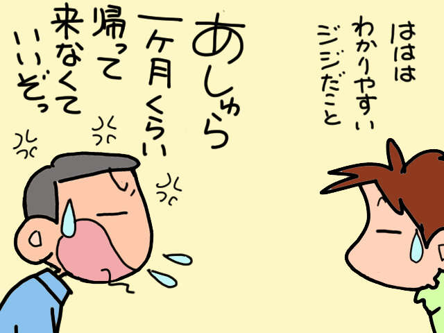

大家好，我是山田阿修罗。
博客《13th-san no Ana - 疗养院的日常生活》（现为13th-san no Tsubo）是一个从我妻子的角度描述我公婆的家庭护理的博客。
我想回顾那些日子，根据我在这里写下的13年的记录，融入我现在的感受。
【上次】老公“暂时抱住高纯”的决定，即将迎来更糟糕的情况。照顾公公婆婆我已经累坏了...
当你开始照顾你的父母时，你迟早会开始思考“关于入学我应该做什么？”。
什么样的设施合适？
它要多少钱？
我们如何支付费用？
每个家庭的周围环境都有所不同。
即使你清除了它们，事情仍然不会顺利。

从预期寿命不长的时代，我们现在正处于前所未有的老龄化社会。
半个世纪以来，世界发生了很大变化，但
改变一个人的意识并不是那么容易的。
我的岳父，当时是昭和时代的个位数，就是一个很好的例子。
我内心的一部分理所当然地认为我们的生活之所以成为可能是因为我们住在一起。
然而就在最近
我为母亲进行白内障手术而短暂停留的是
没有太多的拒绝，感觉还算不错。
基于我上次短暂停留期间岳父的不满

是因为我这次选择了以康复为主的机构吗？
或者你是否开始思考，照顾你的妻子也有各种各样的情况？
不管怎样，我感觉岳父的心态正在逐渐发生变化。
这是一个好兆头吗？
那里
“无论是阿修罗，还是我，都不可能照顾你一辈子。”
“阿修罗妈妈也开始担心很多事情了。”
“同时照顾两个越来越虚弱的人是很困难的。”
“我们是时候开始思考未来了。”
……等等，我的丈夫俊夫说服了我这样做。

我安排和岳父一起去高中寄宿参观。
然后就到了旅行的那一天。
俊雄先生和他的岳父来到佐古家。

我花了大约2个小时才终于回来。这也增加了期望。

根据敏夫的说法
上次简报会时该设施的内部尚未完工，现在已基本完工。
他参观了各个房间，听取了岳父的意见后，办理了更衣室等各种手续。

事情进行得比我预想的还要顺利。
有了申请文件和准备清单，
“这开始感觉像是现实了！”我很兴奋。
几天后...

客厅里，岳父和俊夫先生正在为某事激烈争吵。



岳父，一切都没有改变。

不不不
但这不是我所期望的
比我岳父更麻烦的是俊夫先生。
- ※
- 参考健康法律、医疗制度、护理制度、金融制度等时，请务必事先确认公共机构的最新信息。
- ※
- 文章中使用的图像仅用于说明目的。